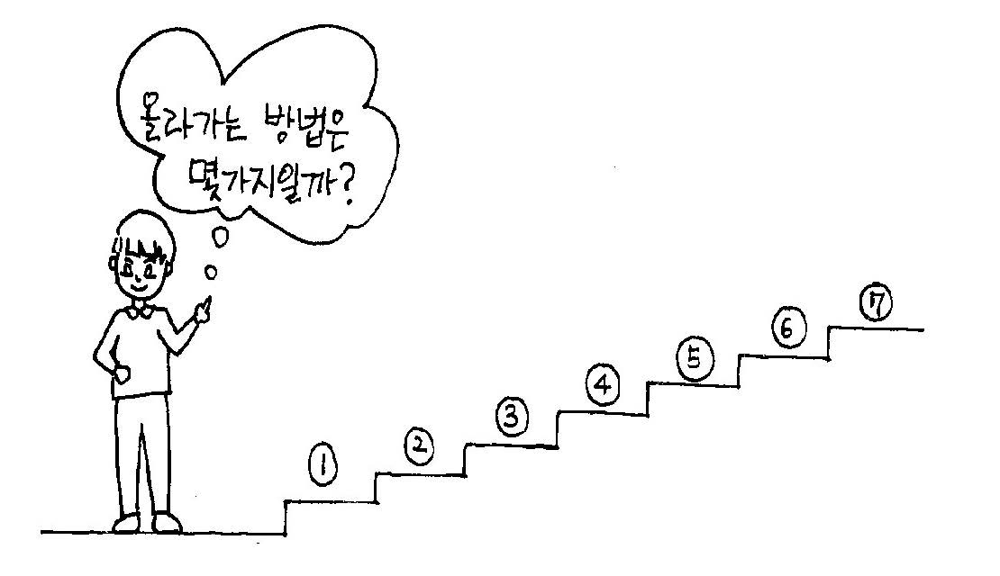
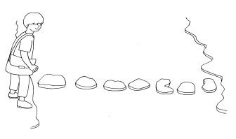

[섹션 10] Dynamic Programming(동적계획법)
계단오르기
- 문제
-
철수는 계단을 오를 때 한 번에 한 계단 또는 두 계단씩 올라간다. 만약 총 4계단을 오른다면 그 방법의 수는
1+1+1+1, 1+1+2, 1+2+1, 2+1+1, 2+2 로 5가지이다.
그렇다면 총 N계단일 때 철수가 올라갈 수 있는 방법의 수는 몇 가지인가?

- 입력
- 첫째 줄은 계단의 개수인 자연수 N(3≤N≤45)이 주어집니다.
- 출력
- 첫 번째 줄에 올라가는 방법의 수를 출력합니다.
- 예제
- 7
- 정답
돌다리 건너기
- 문제
-
철수는 학교에 가는데 개울을 만났습니다. 개울은 N개의 돌로 다리를 만들어 놓았습니다. 철수는 돌 다리를 건널 때 한 번에 한 칸 또는 두 칸씩 건너뛰면서 돌다리를 건널 수 있습니다. 철수가 개울을 건너는 방법은 몇 가지일까요?

- 입력
- 첫째 줄은 돌의 개수인 자연수 N(3≤N≤45)이 주어집니다.
- 출력
- 첫 번째 줄에 개울을 건너는 방법의 수를 출력합니다.
- 예제
- 7
- 정답
최대 부분 증가수열
- 문제
-
N개의 자연수로 이루어진 수열이 주어졌을 때, 그 중에서 가장 길게 증가하는(작은 수에서 큰수로) 원소들의 집합을 찾는 프로그램을 작성하라. 예를 들어, 원소가 2, 7, 5, 8, 6, 4, 7, 12, 3 이면 가장 길게 증가하도록 원소들을 차례대로 뽑아내면 2, 5, 6, 7, 12를 뽑아내어 길이가 5인 최대 부분 증가수열을 만들 수 있다.
- 입력
-
첫째 줄은 입력되는 데이터의 수 N(1≤N≤1,000, 자연수)를 의미하고,
둘째 줄은 N개의 입력데이터들이 주어진다.
- 출력
- 첫 번째 줄에 부분증가수열의 최대 길이를 출력한다.
- 예제
- 8 - 5 3 7 8 6 2 9 4
- 정답
동전교환(냅색 알고리즘)
- 문제
-
다음과 같이 여러 단위의 동전들이 주어져 있을때 거스름돈을 가장 적은 수의 동전으로 교환해주려면 어떻게 주면 되는가? 각 단위의 동전은 무한정 쓸 수 있다.
- 입력
-
첫 번째 줄에는 동전의 종류개수 N(1<=N<=12)이 주어진다. 두 번째 줄에는 N개의 동전의 종류가 주어지고, 그 다음줄에 거슬러 줄 금액 M(1<=M<=500)이 주어진다.
각 동전의 종류는 100원을 넘지 않는다.
- 출력
-
첫 번째 줄에 거슬러 줄 동전의 최소개수를 출력한다.
설명 : 5 5 5 동전 3개로 거슬러 줄 수 있다.
- 예제
-
3
1 2 5
15
- 정답
최대점수 구하기(냅색 알고리즘)
- 문제
-
이번 정보올림피아드대회에서 좋은 성적을 내기 위하여 현수는 선생님이 주신 N개의 문제를 풀려고 합니다. 각 문제는 그것을 풀었을 때 얻는 점수와 푸는데 걸리는 시간이 주어지게 됩니다. 제한시간 M안에 N개의 문제 중 최대점수를 얻을 수 있도록 해야 합니다. (해당문제는 해당시간이 걸리면 푸는 걸로 간주한다, 한 유형당 한개만 풀 수 있습니다.)
- 입력
-
첫 번째 줄에 문제의 개수N(1<=N<=20)과 제한 시간 M(10<=M<=300)이 주어집니다.
두 번째 줄부터 N줄에 걸쳐 문제를 풀었을 때의 점수와 푸는데 걸리는 시간이 주어집니다.
- 출력
- 첫 번째 줄에 제한 시간안에 얻을 수 있는 최대 점수를 출력합니다.
- 예제
-
5 20
10 5
25 12
15 8
6 3
7 4
- 정답